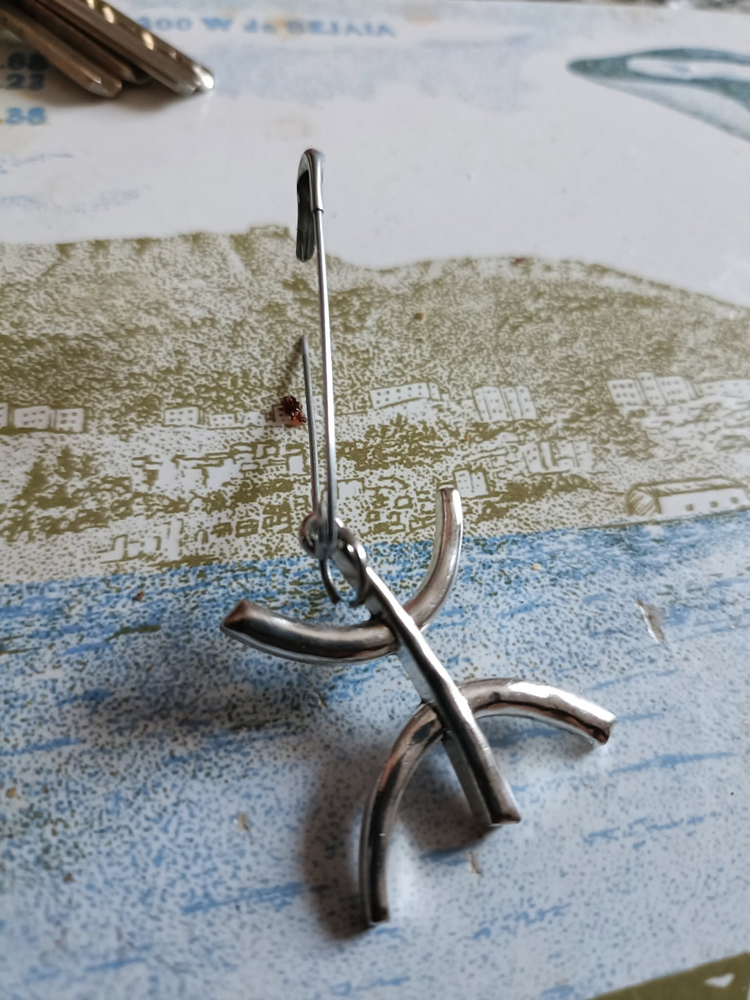

L'épingle à nourrice
Mon identité
tient à peine,
retenue au tissu du passé
par une épingle à nourrice.
Rien d’héroïque,
rien de solennel —
juste ce métal fragile
qui pique la peau
et retient les morceaux.
Mes racines balancent,
prêtes à se détacher,
mais la pointe
me relie encore
à la terre,
à la langue,
à ce nom
qui s’échappe quand je parle trop vite.
Un souffle pourrait rompre,
un geste pourrait briser,
et pourtant —
c’est suffisant
pour me tenir debout.
Djamel Metref
At Yenni le 2 octobre 2025

← Tous les poèmes